マウスの動きを登録する追加機能 mousePlug。その１
前書き
マウスの単純な動きを登録して使える様にする TRR のプラグイン（追加項目）の様なものを紹介して説明します。
とりあえず、名前を mousePlug と名付けています。
ここで説明する
mousePlug
は
ソースコード版の
TextRunRun
でのみ使用できるものです。
ソースコード版の TRR に追加する事で初めて使用できます。
追加の手順は後で説明します。
わざわざ紹介しておいて何ですが、ひどくシンプルなものです。
マウスの動きを、単純な動きだけですが登録しておける様にしたものです。
概要
基本的に以下の画像のメニューを使っていくものです。
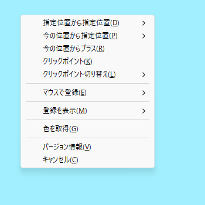
メニューを見ると分かると思いますが、
- 指定位置から指定位置
- 今の位置から指定位置
- 今の位置からプラス
- クリックポイント
この 4 種類に大きく分かれています。
これらのマウスの動きの操作と登録をしていくものです。
もっとも、できる事はマウスの直線的な動きだけであり単純な事しかできません。
とりあえず例として、メニューの 登録を表示 を選ぶと以下のウインドウが表示します。
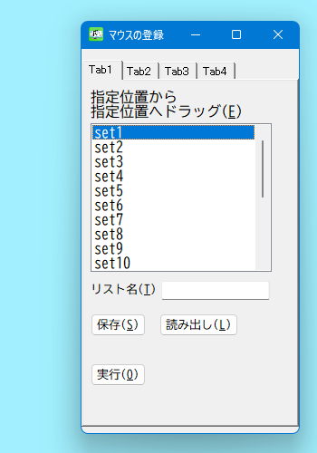
このウインドウは、マウスの動きの情報を登録するリストといったものです。
この mousePlug は、このリストに登録しておいてその後に使っていける様にするものです。
以上の事を見れば使い方と出来る事はほぼ予想がつくようなものだと思います。
とはいっても、使ってみなくてもここで全て把握できる様にするために以下にしつこく説明をしていく事にします。
マウスのドラッグ位置を登録する
マウスのドラッグ位置を登録する方法から説明します。
先ほどのメニューを使って、 マウスで登録 を選びます。
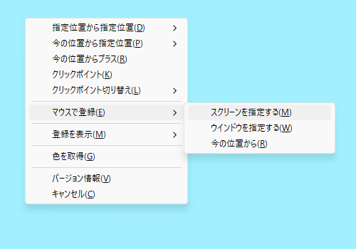
すると、この様なメニューが表示します。
なんでもいいのですが、ここでは
ウインドウを指定する
を選びます。
すると以下の様に、最前面のウインドウが青くなります。
(
青い半透明のウインドウがつくだけ
)
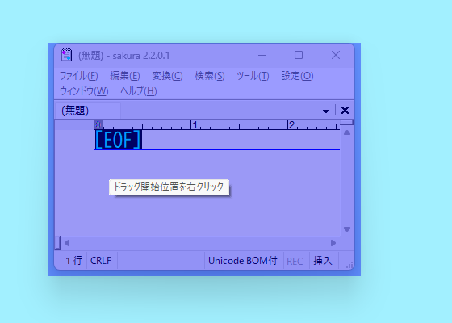
青い部分を右クリックします。
これが、ドラッグの開始位置になります。
そうすると、以下の様なウインドウが表示します。
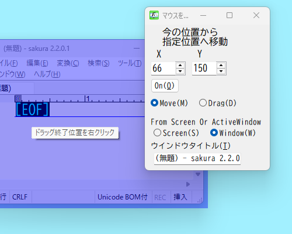
ですが、このウインドウは無視します。
そしてもう一度青い部分を右クリックします。
それがドラッグの終了位置になります。
すると、前のウインドウの代わりに以下の２つのウインドウが表示します。
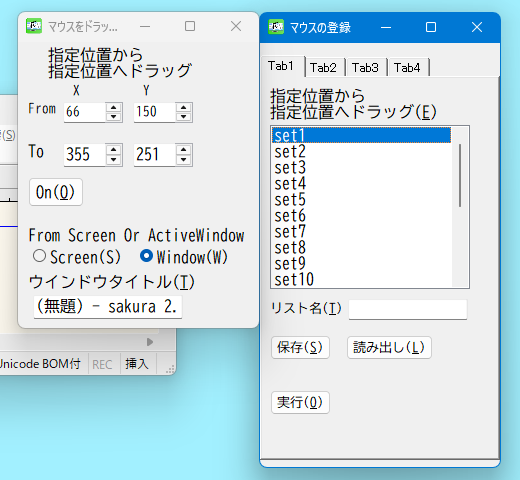
一つは、マウスのドラッグ位置を数値で表しているウインドウで、もう一つはマウスの動きを登録するリストがあるウインドウです。
このマウスのドラッグ位置を数値で表しているウインドウがある状態で、マウスの動きを登録するリストがあるウインドウの
ボタンを押すと、ドラッグ位置が登録されます。
ここの場合では、リストの set1 に登録された事になります。
ボタンを押すと、 か の選択肢がでます。
ここで Yes を選ぶと、最前面のウインドウに対して実行するものができますが、
No を選ぶと、ウインドウタイトルがここで指定されていたものと同じもののみしか実行しないものになってしまいます。
今回の例は、最前面のウインドウの位置を基準として、マウスのドラッグをする位置を登録するというものです。
最前面のウインドウの位置を基準としたくない場合は、
メニューの
マウスで登録
の後の
スクリーンを指定する
の方を選べば、ウインドウの位置は関係なくなります。
取りあえず、以上のような方法でドラッグ位置を登録する事ができます。
後は予想がつく事でしょうが、登録をした後はそれを今後に使っていける事になります。
ちなみに、さっきから何度も登場しているこのウインドウがあります。
このウインドウを マウスの登録 のウインドウと呼んでいきます。
マウスの登録
のウインドウの方の
のボタンを押すと、先ほど出てきた様な「マウスの位置を数字で指定する」ウインドウが表示し、
set1
などにある情報が記入された状態になります。
「マウスの位置を数字で指定する」のウインドウの
のボタンを押すと、その数字の通りの位置にマウスを動かします。
のボタンを押すと、 set1 などにある情報の通りの位置にマウスを動かします。
なお先ほど、この mousePlug は、
- 指定位置から指定位置
- 今の位置から指定位置
- 今の位置からプラス
- クリックポイント
この 4 種類に大きく分かれていると書きました。
マウスの登録 のウインドウも、タブが 4 つあり、そのタブを切り替える事でその 4 種類のものを切り替える事になります。
ソースコードへの追加の仕方
ソースコードへの追加の仕方は windowPlug と同じなのでそちらを参考にしてください。
この
mousePlug
は
TextRunRun
のソースコードに追加しないとそもそも使えません。
今になってですが、使える様にするための方法を説明します。
この mousePlug は、 40 から 49 の Gui の番号を使用しています。
TRR の中で番号が同じ Gui をユーザーが既に使用している場合は注意してください。
同じ様なプラグインである windowPlug というのがありますが、それと同時に使う事は可能です。
mousePlug のダウンロード
GitHub のページからソースコードをダウンロードします。
TRR のソースコードをダウンロードした方なら、 GitHub からそれをする方法も説明不要だと思います。
TRR のソースコードをダウンロードした方でないとそもそも mousePlug の追加はできません。
mousePlug のフォルダをコピーする
mousePlug をダウンロードして解凍すると、以下のファイル構成になっていると思います。
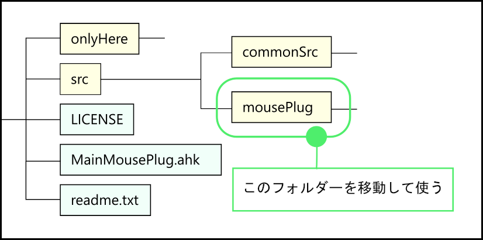
この中の
src
の中にある、
mousePlug
のフォルダを使います。
このフォルダだけを、 TRR のフォルダの中の
この中にコピーしてください。
ソースコードを記入する
次は、ファイルの中に文字を記入します。
このフォルダの中にある、
pluginsSubroutineAndFunction.ahk
のファイルに以下を記入します。
#Include %A_ScriptDir%\trrEvery\Plugins\mousePlug\useForPlug\mousePlugSubrouAndFunc.ahk
そして、同じフォルダ内にある
pluginsStartUpExecute.ahk
のファイルに以下を記入します。
#Include %A_ScriptDir%\trrEvery\Plugins\mousePlug\useForPlug\mousePlugStartUp.ahk
少し手間がかかりますが、以上で mousePlug を使える様にする準備は終了です。
TRR を起動すれば使える様になっているはずです。
使える様になったかどうかのテストとして
Gosub, Mou_Plug_SubMenuEvery
これを使ってみてください。
これを使うと、先ほど説明に挙げたメニューが表示するはずです。
このメニューが表示されれば正しくソースコードが追加されている事になります。
それと、うまくいったなら、このスクリプトを 常時使用のキー か アイテム にしておけば手軽に使える様になると思います。
マウスの位置を数字で指定するウインドウについて
使い方の説明に戻ります。
先ほどから、この mousePlug は、
- 指定位置から指定位置
- 今の位置から指定位置
- 今の位置からプラス
- クリックポイント
この 4 種類に大きく分かれていると書きました。
その種類ごとに、マウスの位置を数字で指定するウインドウがあります。
ここでは、 指定位置から指定位置 の種類のウインドウを使って説明しておきます。
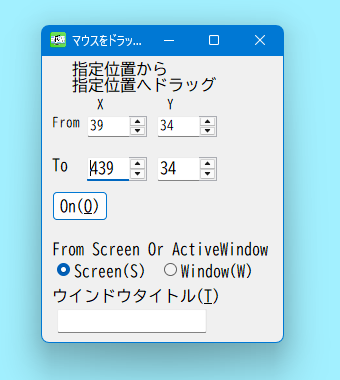
X （横）と Y （縦）の位置
これらを数値で指定します。
Form が開始位置で、 To が終了位置の意味です。
のボタンを押すと、指定した位置でマウスをドラッグします。
ウインドウを基準位置にするかどうか
From Screen Or ActiveWindow と書かれている箇所があります。
これは位置が、スクリーン ( パソコン画面 ) を基準にした位置か、最前面のウインドウを基準にした位置かを選ぶものです。
Screen にチェックがある状態なら、パソコン画面の左上の端が 0 の位置になります。
ActiveWindow にチェックがある状態なら、最前面のウインドウの左上の端 ( ウインドウタイトル部分を含む ) が 0 の位置になります。
その場合、マイナスの値も意味を成す様になり、
X
が
-100
なら、最前面のウインドウの左上の端から左に 100 の位置に、
Y
が
-100
なら、最前面のウインドウの左上の端から上に 100 の位置を意味する様になります。
ウインドウタイトル
一番下に ウインドウタイトル の入力欄があります。
ここに何らかの文字が記入している場合は、そのウインドウタイトルのウインドウを最前面にします。
TRR のウインドウタイトルの指定は、前方一致です。
前方一致のルールを、ユーザーが意図的に変える事は可能ですが、変えた場合は テキスト上のキー が使用できなくなってしまいます。
ウインドウをアクティブにするかどうかだけです。
なので、ここに何も記入されていない場合か、記入があっても一致するウインドウタイトルのウインドウが無い場合は何もしません。
その他のウインドウ
この「マウスの位置を数字で指定するウインドウ」は他にも、
今の位置から指定位置
と
今の位置からプラス
の種類がありますが、説明する事は先程説明した事と同じです。
後は大体予想がつくと思うので説明を省略します。
どのようなものか、画像だけ載せておきます。
今の位置から指定位置 のウインドウ
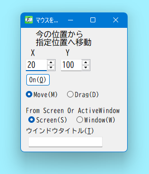
今の位置からプラス のウインドウ
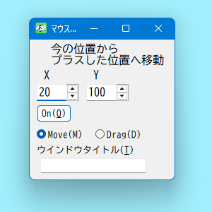
クリックポイント
クリックポイント という種類もあります。
これは単純に、指定した位置を左クリックするだけのものです。
メニューから クリックポイント を選ぶと次のウインドウが表示します。
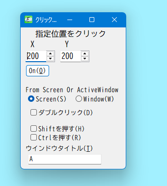
このウインドウは、先程説明していた「マウスの位置を数字で指定するウインドウ」と説明する事がほぼ同じです。
違いは、
- ダブルクリック
- Shiftを押す
- Ctrlを押す
これらのチェックボックスがあるくらいです。
これも大体予想がつくと思うので説明を省略します。
のボタン
マウスの登録 のウインドウの Tab4 は、 クリックポイント について扱うものです。
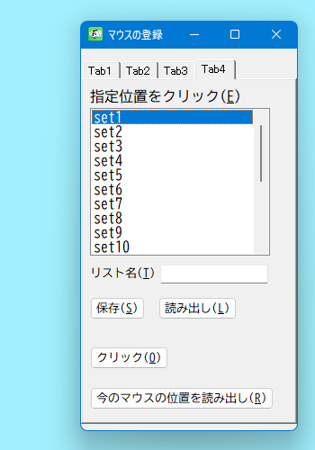
このタブの箇所だけ他のタブと違うボタンがあるので説明をしておきます。
のボタンについてです。
このボタンを押すとマウスの位置の数字を クリックポイント 用の「マウスの位置を数字で指定するウインドウ」の入力欄に記入するというものです。
ボタンを押すと、以下のウインドウが表示します。
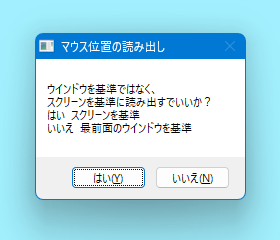
選択肢がでてきて、「スクリーンを基準」にするか、「最前面のウインドウを基準」にする位置かを選ぶ事になります。
を選ぶと、「スクリーンを基準」に
を選ぶと、「最前面のウインドウを基準」にしたマウスの位置の数字が記入されます。
その時の事ですが、
を選ぶと、
Screen
の方にチェックが入り、
を選ぶと、
ActiveWindow
の方にチェックが入ります。
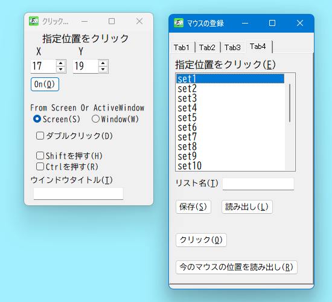
クリックポイント を登録する際は、このボタンを使えばマウスを指定位置にもってくるだけで登録の準備ができます。
その際は、マウスを動かさずにボタンを押す必要がある事になります。
は Alt+R でボタンを押せるのでそのキーを使えばよいと思います。
ボタンに (R) と書かれているのは、 Alt+R でボタンが押せる事を意味しています。
クリックポイント切り替え
大した事ではないですが、一応説明しておきます。
メニュー内に クリックポイント切り替え というものがあります。
それを選ぶと
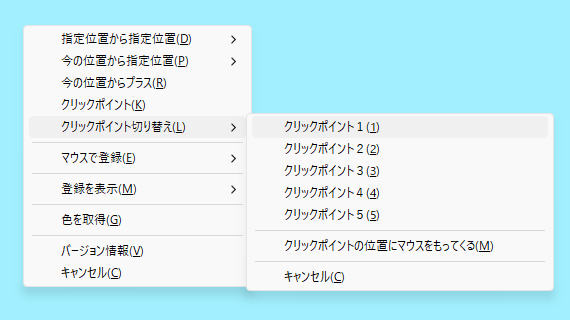
このメニューが表示します。
これが何を意味しているかというと、単純に
マウスの登録
のリストの
クリックポイント
の種類の
set1
から
set5
を意味しています。
単に マウスの登録 のウインドウのリストを切り替えた場合と同じです。
メニューからも使える様にしておいただけのものです。
このメニューから切り替えた場合も、 マウスの登録 のウインドウのリスト内の選択位置が変わります。
クリックポイント２ を選んだら、 set2 が選ばれている状態になります。
クリックポイントの位置にマウスをもってくる というメニューの項目があります。
ちなみに初期の状態では、
マウスの登録
のリストの
クリックポイント
の種類の
set1
が
クリックポイント
として用意された状態になっています。
よって、初期の状態では
クリックポイントの位置にマウスをもってくる
のメニューの項目を選ぶと、
set1
に登録してある箇所にマウスを移動する事になります。
set1
に何も登録していない場合、
X が
200
Y が
200
の位置がデフォルトで登録されている事になっています。
- マウスの登録 の クリックポイント の種類のリストの set1 などを変更して、 ボタンを押す。
- メニューの クリックポイント切り替え の項目から、 クリックポイント を切り替える。
このどちらかをした場合、今の クリックポイント が変わります。
よって、 クリックポイントの位置にマウスをもってくる の項目を選んだ時のマウスの移動する位置が変更になるということです。
必要な説明は大体以上だと思います。
この
mousePlug
は
windowPlug
と同じく
使っていけばすぐに分かる様なものなので、これ以上読まなくても普通に使っていけると思います。
とはいえ、このホームページは仕様を全て記入していく事を目的にしています。
mousePlug についての説明しておきたい事はまだあるのでこの後もまだ説明は続きます。
ただし、これ以降は mousePlug の細かい仕様についての事になります。
ですので、さらにいろいろ知りたい方はこれ以降も読んでみてください。